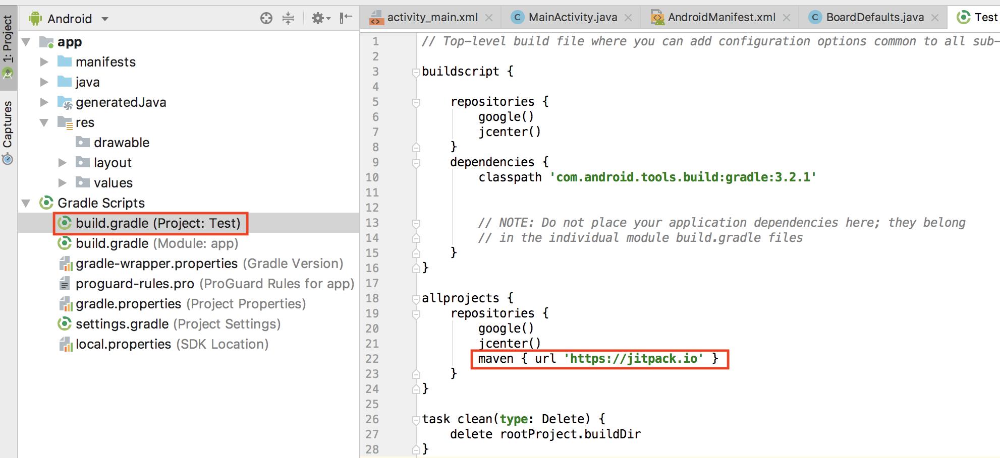
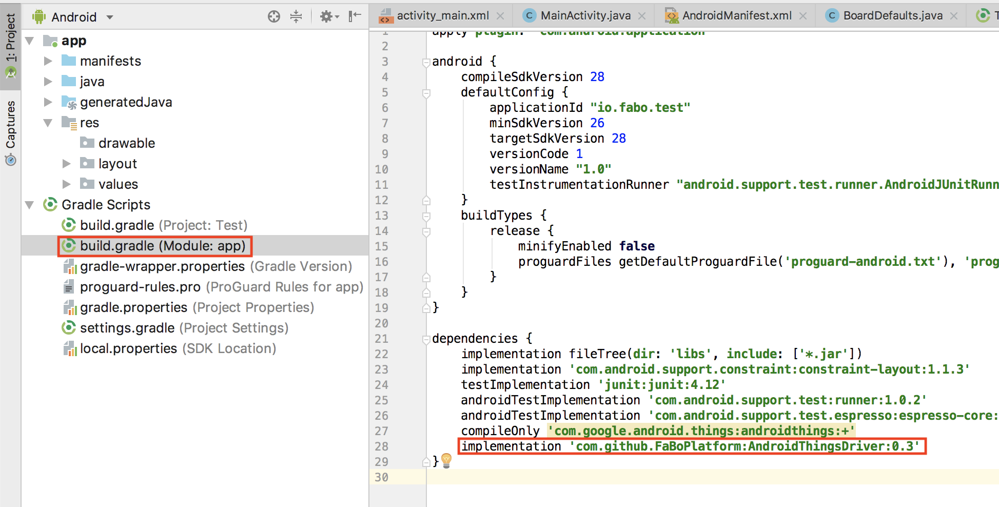

FaBo libtary
FaBoのModule用ライブラリは、Githubで公開しています。
https://github.com/FaBoPlatform/AndroidThingsDriver/tree/master/driver/src/main/java/io/fabo/driver
Gradleの編集
| maven { url 'https://jitpack.io' }
|
| allprojects {
repositories {
google()
jcenter()
maven { url 'https://jitpack.io' }
}
}
|

| implementation 'com.github.FaBoPlatform:AndroidThingsDriver:0.3'
|
| dependencies {
implementation fileTree(dir: 'libs', include: ['*.jar'])
implementation 'com.android.support.constraint:constraint-layout:1.1.3'
testImplementation 'junit:junit:4.12'
androidTestImplementation 'com.android.support.test:runner:1.0.2'
androidTestImplementation 'com.android.support.test.espresso:espresso-core:3.0.2'
compileOnly 'com.google.android.things:androidthings:+'
implementation 'com.github.FaBoPlatform:AndroidThingsDriver:0.3'
}
|

AndroidManifest
2つのパーミッションを記載する。
1
2
3
4
5
6
7
8
9
10
11
12
13
14
15
16
17
18
19
20 | <?xml version="1.0" encoding="utf-8"?>
<manifest xmlns:android="http://schemas.android.com/apk/res/android"
package="io.fabo.test">
<uses-permission android:name="com.google.android.things.permission.MANAGE_SENSOR_DRIVERS" />
<uses-permission android:name="com.google.android.things.permission.USE_PERIPHERAL_IO" />
<application android:label="@string/app_name">
<uses-library android:name="com.google.android.things" />
<activity android:name=".MainActivity">
<intent-filter>
<action android:name="android.intent.action.MAIN" />
<category android:name="android.intent.category.LAUNCHER" />
</intent-filter>
</activity>
</application>
</manifest>
|
Boardの識別
BoardDefaults.java
1
2
3
4
5
6
7
8
9
10
11
12
13
14
15
16
17
18
19
20
21
22
23
24
25
26
27
28
29
30
31
32
33
34
35
36
37
38
39
40
41
42 | package io.fabo.test;
/*
* Copyright 2016, The Android Open Source Project
*
* Licensed under the Apache License, Version 2.0 (the "License");
* you may not use this file except in compliance with the License.
* You may obtain a copy of the License at
*
* http://www.apache.org/licenses/LICENSE-2.0
*
* Unless required by applicable law or agreed to in writing, software
* distributed under the License is distributed on an "AS IS" BASIS,
* WITHOUT WARRANTIES OR CONDITIONS OF ANY KIND, either express or implied.
* See the License for the specific language governing permissions and
* limitations under the License.
*/
import android.os.Build;
@SuppressWarnings("WeakerAccess")
public class BoardDefaults {
private static final String DEVICE_RPI3 = "rpi3";
private static final String DEVICE_IMX6UL_PICO = "imx6ul_pico";
private static final String DEVICE_IMX7D_PICO = "imx7d_pico";
/**
* Return the preferred I2C port for each board.
*/
public static String getI2CPort() {
switch (Build.DEVICE) {
case DEVICE_RPI3:
return "I2C1";
case DEVICE_IMX6UL_PICO:
return "I2C2";
case DEVICE_IMX7D_PICO:
return "I2C1";
default:
throw new IllegalStateException("Unknown Build.DEVICE " + Build.DEVICE);
}
}
}
|
Colorセンサー(#203)
MainActivity.java
1
2
3
4
5
6
7
8
9
10
11
12
13
14
15
16
17
18
19
20
21
22
23
24
25
26
27
28
29
30
31
32
33
34
35
36
37
38
39
40
41
42
43
44
45
46
47
48
49
50
51
52
53
54
55
56
57
58
59
60
61
62
63
64
65
66
67
68
69
70
71
72
73
74
75
76
77
78
79
80
81
82
83
84
85
86 | package io.fabo.test;
import android.app.Activity;
import android.content.Context;
import android.hardware.Sensor;
import android.hardware.SensorEvent;
import android.hardware.SensorEventListener;
import android.hardware.SensorManager;
import android.os.Bundle;
import android.util.Log;
import java.io.IOException;
import io.fabo.driver.Adx345AccelerometerDriver;
import io.fabo.driver.ISL29034AmbientDriver;
import io.fabo.driver.S11059ColorDriver;
public class MainActivity extends Activity implements SensorEventListener {
private S11059ColorDriver mS11059ColorDriver;
private SensorManager mSensorManager;
@Override
protected void onCreate(Bundle savedInstanceState) {
super.onCreate(savedInstanceState);
setContentView(R.layout.activity_main);
mSensorManager = (SensorManager) getSystemService(Context.SENSOR_SERVICE);
mSensorManager.registerDynamicSensorCallback(new SensorManager.DynamicSensorCallback() {
@Override
public void onDynamicSensorConnected(Sensor sensor) {
Log.i(TAG, "Connected");
Log.i(TAG, "sensor.getType():" + sensor.getType());
Log.i(TAG, "sensor.getName():" + sensor.getName());
if (sensor.getType() == Sensor.TYPE_DEVICE_PRIVATE_BASE) {
Log.i(TAG, "sensor.getName():" + sensor.getName());
if(sensor.getName().startsWith("FaBoS11059")) {
Log.i(TAG, "Color sensor connected");
mSensorManager.registerListener(MainActivity.this, sensor,
SensorManager.SENSOR_DELAY_NORMAL);
}
}
}
});
try {
mS11059ColorDriver = new S11059ColorDriver(BoardDefaults.getI2CPort());
mS11059ColorDriver.register();
Log.i(TAG, "mS11059ColorDriver driver registered");
} catch (IOException e) {
Log.e(TAG, "Error initializing accelerometer driver: ", e);
}
}
@Override
public void onDestroy() {
super.onDestroy();
if (mS11059ColorDriver != null) {
mSensorManager.unregisterListener(this);
mS11059ColorDriver.unregister();
try {
mS11059ColorDriver.close();
} catch (IOException e) {
Log.e(TAG, "Error closing accelerometer driver: ", e);
} finally {
mS11059ColorDriver = null;
}
}
}
@Override
public void onSensorChanged(SensorEvent event) {
Log.i(TAG, "event.sensor.getName()=" + event.sensor.getName());
if(event.sensor.getName().startsWith("FaBoS11059")) {
Log.i(TAG, "Color event: " + event.values[0] + ", " + event.values[1] + ", "
+ event.values[2] + ", " + event.values[3]);
}
}
@Override
public void onAccuracyChanged(Sensor sensor, int accuracy) {
}
}
|